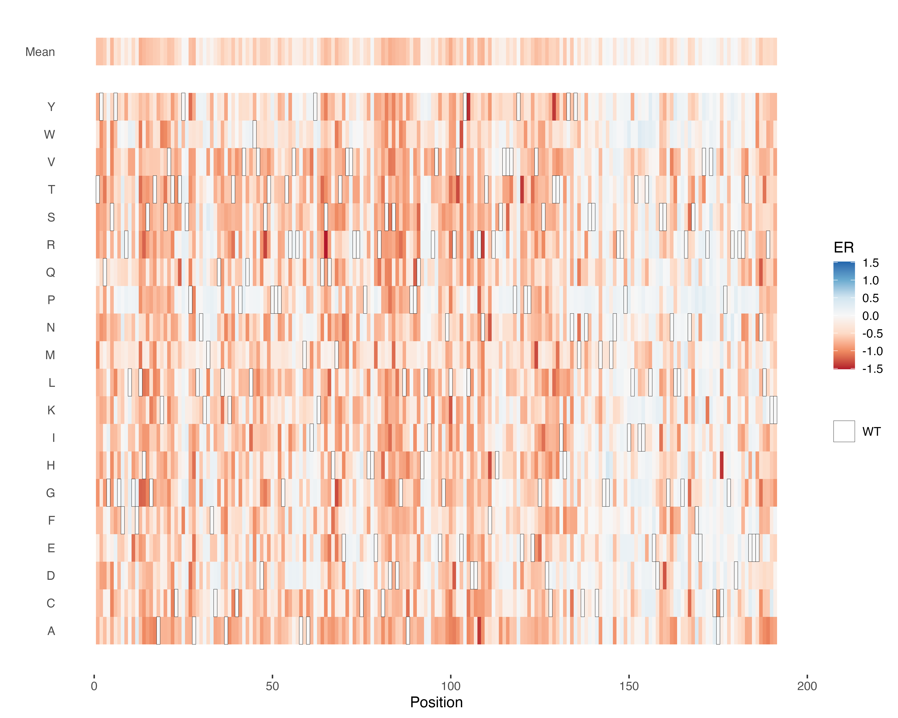
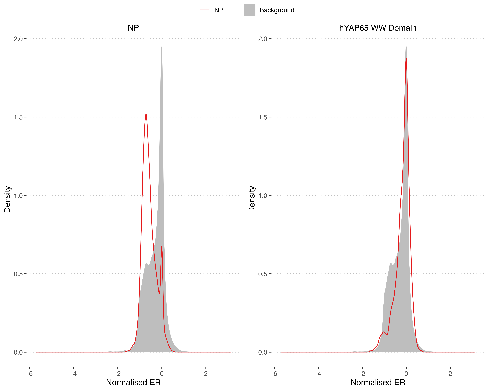
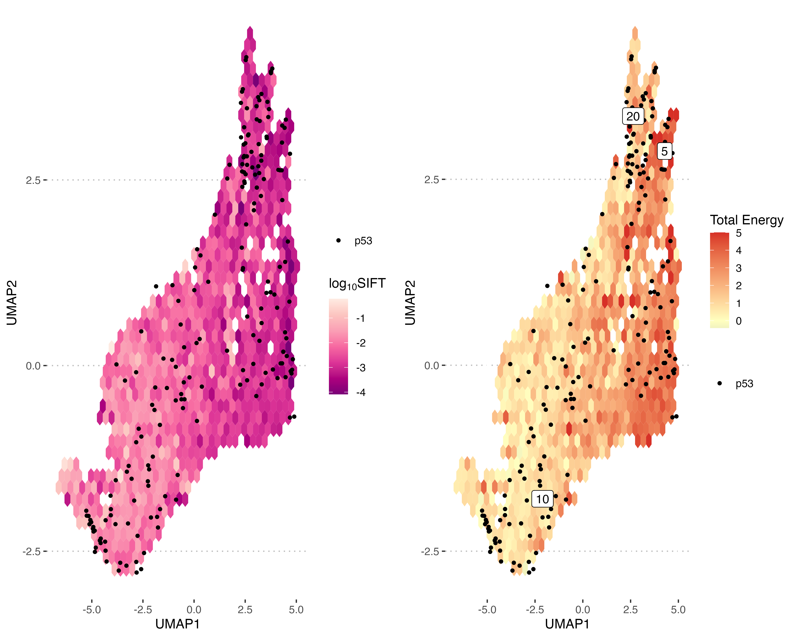
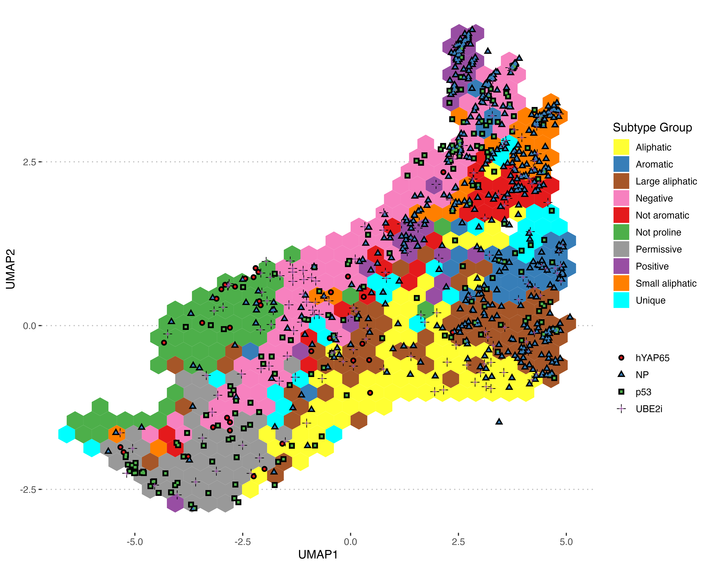
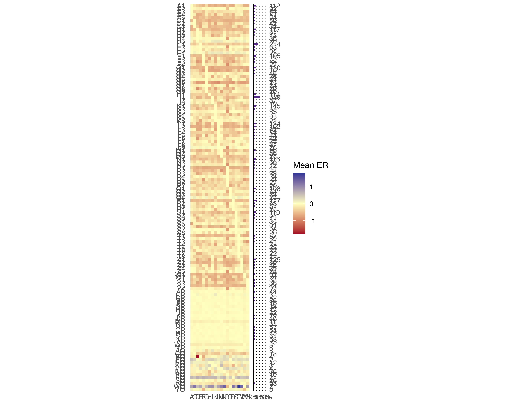

DeepScanScape: Deep Mutational Landscape Analysis
Source:vignettes/deepscanscape.Rmd
deepscanscape.RmdThis vignette demonstrates usage of the DeepScanScape package by importing several deep mutational scans and analysing them. First we load the DeepScanScape package and initialise a list to hold the parsed datasets.
library(deepscanscape)
dms <- list()Loading Deep Mutational Scan Data
We will use the following studies as examples:
- p53 (Kotler et al. 2018)
- UBE2i (Weile et al. 2017)
- Influenza Nucleoprotein (Doud et al. 2015)
- hYAP65 WW domain (Araya et al. 2012)
The latter 3 are part of the Deep Landscape dataset generated by Dunham & Beltrao (2020), while the first is a new study not used to generate the landscape. In each case we first load the data into a base R data frame and examine it’s structure, then process it so that it can be loaded into the standard format for DeepScanScape - the deep_mutational_scan object. These store deep scan data in a standard format with variant effect scores on a standard normalised scale.
p53
This data comes from MaveDB, meaning it is in a standardised format that DeepScanScape recognises and can directly convert into a deep_mutational_scan.
df_p53 <- read.csv(system.file("extdata", "urn_mavedb_00000059_a_1_scores.csv", package = "deepscanscape"), skip = 4)
head(df_p53, n = 10)
#> accession hgvs_nt hgvs_pro score
#> 1 urn:mavedb:00000059-a-1#1 NA p.Lys190fs 0.51437850
#> 2 urn:mavedb:00000059-a-1#2 NA p.Lys190fs 1.12150651
#> 3 urn:mavedb:00000059-a-1#3 NA p.Lys190fs 0.12167722
#> 4 urn:mavedb:00000059-a-1#4 NA p.Lys190fs 0.93340046
#> 5 urn:mavedb:00000059-a-1#5 NA p.Lys190fs 0.59828604
#> 6 urn:mavedb:00000059-a-1#6 NA p.Lys190fs 0.58229992
#> 7 urn:mavedb:00000059-a-1#7 NA p.Lys190fs 0.46064492
#> 8 urn:mavedb:00000059-a-1#8 NA p.Lys190fs -0.09049759
#> 9 urn:mavedb:00000059-a-1#9 NA p.Lys190fs 0.53761134
#> 10 urn:mavedb:00000059-a-1#10 NA p.Lys190Trp -2.40583136In this case there are duplicate scores and multiply mutated sequences so we use the “duplicates” and “average_multi” arguments to handle them. The scores are already in log2 form, so do not need any further transforming.
dms$p53 <- deep_mutational_scan(df_p53, name = "p53", gene = 'p53', study = 'Kotler et al. (2018)',
source = "https://www.mavedb.org/scoreset/urn:mavedb:00000059-a-1/",
scheme = "mavedb", trans = NULL, na_value = 'impute', duplicates = "mean",
average_multi = TRUE)
dms$p53
#> # Deep mutational scanning data
#> # Name: p53
#> # Study: Kotler et al. (2018)
#> # Gene: p53
#> # 191 positions
#> # Positional data:
#> position wt A C D E F G H
#> <dbl> <chr> <dbl> <dbl> <dbl> <dbl> <dbl> <dbl> <dbl>
#> 1 1 T -0.767 -0.683 -0.658 -0.239 -0.690 -0.957 -0.693
#> 2 2 Y -0.437 -0.717 -0.873 -0.714 -0.703 -0.269 -0.900
#> 3 3 Q -0.690 -0.0939 -0.884 -0.430 -0.124 -0.936 -0.617
#> 4 4 G -0.238 -0.0746 -0.539 -0.0621 0.0467 0 0.0259
#> 5 5 S -0.772 -1.03 -1.00 -0.157 -0.666 -0.919 -0.997
#> 6 6 Y -0.307 -0.678 0.0557 0.169 -0.836 0.0550 -0.416
#> 7 7 G -0.540 -0.595 -0.729 -0.587 -0.675 0 -0.835
#> 8 8 F 0.153 -0.102 0.137 -0.613 0 0.128 0.216
#> 9 9 R -0.722 -0.560 -0.0741 -0.320 -0.328 -0.511 -0.545
#> 10 10 L 0.0169 -0.166 -0.576 -0.0247 0.249 0.270 0.120
#> # … with 181 more rows, and 34 more variables: I <dbl>, K <dbl>, L <dbl>,
#> # M <dbl>, N <dbl>, P <dbl>, Q <dbl>, R <dbl>, S <dbl>, T <dbl>, V <dbl>,
#> # W <dbl>, Y <dbl>, name <chr>, impute_A <dbl>, impute_C <dbl>,
#> # impute_D <dbl>, impute_E <dbl>, impute_F <dbl>, impute_G <dbl>,
#> # impute_H <dbl>, impute_I <dbl>, impute_K <dbl>, impute_L <dbl>,
#> # impute_M <dbl>, impute_N <dbl>, impute_P <dbl>, impute_Q <dbl>,
#> # impute_R <dbl>, impute_S <dbl>, impute_T <dbl>, impute_V <dbl>,
#> # impute_W <dbl>, impute_Y <dbl>UBE2i
This is another dataset from MaveDB, so can be processed in the same way. However, in this case the data was processed using the VAMP-Seq method (Matreyek et al. 2018) and scores are on a different scale, with neutral variants \(\approx 1\) and null variants \(\approx 0\). DeepScanScape requires scores to be transformed onto the \(log_2ER\) scale, including built in transformations for common score formats such as VAMP-Seq. More unusual scores require a custom function to transform them.
df_ube2i <- read.csv(system.file("extdata", "urn_mavedb_00000001-a-1_scores.csv", package = "deepscanscape"), skip = 4)
dms$ube2i <- deep_mutational_scan(df_ube2i, name = "UBE2i", gene = 'UBE2i', study = 'Weile et al. (2017)',
scheme = "mavedb", trans = "vamp-seq", na_value = 'impute', duplicates = "mean",
average_multi = TRUE)
dms$ube2i
#> # Deep mutational scanning data
#> # Name: UBE2i
#> # Study: Weile et al. (2017)
#> # Gene: UBE2i
#> # 159 positions
#> # Positional data:
#> position wt A C D E F G H I
#> <dbl> <chr> <dbl> <dbl> <dbl> <dbl> <dbl> <dbl> <dbl> <dbl>
#> 1 1 M -0.454 -0.356 -0.382 -0.504 -0.434 -0.448 -0.517 -0.487
#> 2 2 S -0.359 0.175 -0.200 -0.154 0.0421 0.168 -0.0681 -0.362
#> 3 3 G -0.701 -0.0885 0.0655 -0.124 -0.149 0 -0.310 -0.228
#> 4 4 I -0.101 -0.127 0.160 -0.0979 -0.365 -0.458 -0.187 0
#> 5 5 A 0 0.195 -0.588 -0.150 -0.236 0.0219 0.650 0.173
#> 6 6 L -0.218 -0.151 -0.389 -0.203 -0.205 -0.198 -0.328 -0.535
#> 7 7 S -0.873 -0.214 -0.545 -0.292 -0.751 -0.385 -0.450 -0.430
#> 8 8 R -0.214 -0.246 -0.281 -0.0123 -0.267 -0.862 -0.331 -0.989
#> 9 9 L -0.408 -0.275 0.129 -0.466 -1.15 -0.433 -0.878 -0.551
#> 10 10 A 0 -0.908 -1.12 -0.887 -0.155 -0.361 -0.571 -0.495
#> # … with 149 more rows, and 33 more variables: K <dbl>, L <dbl>, M <dbl>,
#> # N <dbl>, P <dbl>, Q <dbl>, R <dbl>, S <dbl>, T <dbl>, V <dbl>, W <dbl>,
#> # Y <dbl>, name <chr>, impute_A <dbl>, impute_C <dbl>, impute_D <dbl>,
#> # impute_E <dbl>, impute_F <dbl>, impute_G <dbl>, impute_H <dbl>,
#> # impute_I <dbl>, impute_K <dbl>, impute_L <dbl>, impute_M <dbl>,
#> # impute_N <dbl>, impute_P <dbl>, impute_Q <dbl>, impute_R <dbl>,
#> # impute_S <dbl>, impute_T <dbl>, impute_V <dbl>, impute_W <dbl>,
#> # impute_Y <dbl>Nucleoprotein
The data from this study is stored in a custom format, with each row representing a position in the protein and columns for the percentage observed in the post selection library for each amino acid.
df_np <- read.delim(file = system.file("extdata", "doud_2015_np.csv", package = "deepscanscape"), sep = " ")
tibble::as_tibble(df_np)
#> # A tibble: 498 x 23
#> POSITION WT SITE_ENTROPY PI_A PI_C PI_D PI_E PI_F PI_G
#> <int> <chr> <dbl> <dbl> <dbl> <dbl> <dbl> <dbl> <dbl>
#> 1 1 M 3.97 0.0417 0.0411 0.0452 0.0412 0.0398 0.0365
#> 2 2 A 1.78 0.716 0.00725 0.00540 0.0260 0.00778 0.0118
#> 3 3 S 3.84 0.118 0.0166 0.00580 0.00620 0.0931 0.0159
#> 4 4 Q 3.79 0.0261 0.0288 0.00488 0.0387 0.159 0.00851
#> 5 5 G 3.39 0.122 0.0807 0.0117 0.00760 0.00610 0.245
#> 6 6 T 1.50 0.0450 0.00741 0.00656 0.00604 0.00596 0.00416
#> 7 7 K 1.70 0.00292 0.0116 0.00800 0.0406 0.00620 0.00346
#> 8 8 R 1.90 0.00638 0.0180 0.00794 0.00620 0.00673 0.0173
#> 9 9 S 3.40 0.121 0.0134 0.00351 0.00706 0.0542 0.00822
#> 10 10 Y 3.87 0.0781 0.0330 0.0414 0.0262 0.0529 0.0112
#> # … with 488 more rows, and 14 more variables: PI_H <dbl>, PI_I <dbl>,
#> # PI_K <dbl>, PI_L <dbl>, PI_M <dbl>, PI_N <dbl>, PI_P <dbl>, PI_Q <dbl>,
#> # PI_R <dbl>, PI_S <dbl>, PI_T <dbl>, PI_V <dbl>, PI_W <dbl>, PI_Y <dbl>This format is similar to the “wide” format supported by DeepScanScape, except scores are not yet normalised against the WT value. We will therefore normalise each column by the WT score for that row before using the wide parsing mode and \(log_2\) transform to create the standard object.
# Set colnames
amino_acids <- c("A", "C", "D", "E", "F", "G", "H", "I", "K", "L", "M", "N", "P", "Q", "R", "S", "T", "V", "W", "Y")
names(df_np) <- c("position", "wt", "entropy", amino_acids)
# Normalise Scores
scores <- as.matrix(df_np[, amino_acids])
wt_score <- scores[matrix(c(1:nrow(scores), match(df_np$wt, amino_acids)), ncol = 2)]
scores <- scores / wt_score
df_np <- cbind(df_np[c("position", "wt")], scores)
# Create deep_mutational_scan
dms$np <- deep_mutational_scan(df_np, name = "NP", gene = "NP", study = "Doud et al. 2015",
scheme = "wide", trans = "log2", na_value = "impute")
dms$np
#> # Deep mutational scanning data
#> # Name: NP
#> # Study: Doud et al. 2015
#> # Gene: NP
#> # 497 positions
#> # Positional data:
#> position wt A C D E F G H I
#> <dbl> <chr> <dbl> <dbl> <dbl> <dbl> <dbl> <dbl> <dbl> <dbl>
#> 1 1 M -0.500 -0.504 -0.477 -0.503 -0.513 -0.537 -0.424 -0.709
#> 2 2 A 0 -1.28 -1.36 -0.921 -1.26 -1.14 -1.41 -1.40
#> 3 3 S 0.0350 -0.510 -0.802 -0.784 -0.0312 -0.522 -0.152 -0.241
#> 4 4 Q -0.0524 -0.0245 -0.518 0.0572 0.451 -0.363 -0.143 0.241
#> 5 5 G -0.194 -0.309 -0.844 -0.965 -1.03 0 -0.789 -1.02
#> 6 6 T -0.799 -1.30 -1.33 -1.36 -1.36 -1.46 -1.14 -0.952
#> 7 7 K -1.54 -1.16 -1.26 -0.812 -1.33 -1.50 -1.34 -1.06
#> 8 8 R -1.31 -1.02 -1.25 -1.32 -1.30 -1.03 -1.37 -1.43
#> 9 9 S -0.227 -0.838 -1.21 -1.02 -0.450 -0.973 -1.04 -0.505
#> 10 10 Y -0.219 -0.458 -0.395 -0.522 -0.327 -0.758 -0.102 -0.179
#> # … with 487 more rows, and 33 more variables: K <dbl>, L <dbl>, M <dbl>,
#> # N <dbl>, P <dbl>, Q <dbl>, R <dbl>, S <dbl>, T <dbl>, V <dbl>, W <dbl>,
#> # Y <dbl>, name <chr>, impute_A <dbl>, impute_C <dbl>, impute_D <dbl>,
#> # impute_E <dbl>, impute_F <dbl>, impute_G <dbl>, impute_H <dbl>,
#> # impute_I <dbl>, impute_K <dbl>, impute_L <dbl>, impute_M <dbl>,
#> # impute_N <dbl>, impute_P <dbl>, impute_Q <dbl>, impute_R <dbl>,
#> # impute_S <dbl>, impute_T <dbl>, impute_V <dbl>, impute_W <dbl>,
#> # impute_Y <dbl>hYAP65 WW Domain
This study associates each variant effect score (the “fitness” column) with a sequence for the entire WW domain - another input format supported by the package. It also contains columns giving the mutations, position and mutant amino acid as comma separated strings as well as additional data from which the fitness was calculated.
df_hyap65 <- read.csv(system.file("extdata", "araya_2012_hYAP65_ww.tsv", package = "deepscanscape"), sep = "\t")
head(df_hyap65, n = 10)
#> sequence mutation.count slope rsquared
#> 1 DVPLPAGWEMAKTRSGQRYFLNHVDQTTKWQDPR 3 -0.04197027 0.001210278
#> 2 DVPLPAGWEMAKTSSDQRYVLNHIDQTTT*QDPR 3 1.32751008 0.858360143
#> 3 EVPLTAGWEMAKTSSGQRYFLNHIDETTTWQDPR 3 -1.07727309 0.733881171
#> 4 DVPLPAGWEKAKTSSGLRYFLNHIDQTTTWQVPR 3 0.56176737 0.195067946
#> 5 YVALPAGWEMAKTSSGQRYFMNHIDQTTTWQDPR 3 1.78624321 0.625087295
#> 6 EVPLPASWEMAKTSSGQRYFLNHIDQTTTWQDPR 2 -0.12632300 0.061684010
#> 7 DVPLPAGWKMDKTSSGQLYFLNHIDQTTTWQDPR 3 0.94473044 0.528514345
#> 8 DVPPPAGWEMAKTCSGQRYFLNHIDQTPTWQDPR 3 -0.88794326 0.720080860
#> 9 DVPLPAGWEMAKTSSGQRYFMNHIDQTTTWLDPR 2 -0.86870768 0.436073420
#> 10 DFQLPAGWEMAKTSSGERYFLNHIDQTTTWQDPR 3 1.29462756 0.958521995
#> fitness mutations positions amino.acids
#> 1 0.5547552 23R,33V,38K 23,33,38 R,V,K
#> 2 1.4333626 25D,29V,39* 25,29,39 D,V,*
#> 3 0.2706725 10E,14T,35E 10,14,35 E,T,E
#> 4 0.8430329 19K,26L,41V 19,26,41 K,L,V
#> 5 1.9699196 10Y,12A,30M 10,12,30 Y,A,M
#> 6 0.5232494 10E,16S 10,16 E,S
#> 7 1.0993296 18K,20D,27L 18,20,27 K,D,L
#> 8 0.3086300 13P,23C,37P 13,23,37 P,C,P
#> 9 0.3127726 30M,40L 30,40 M,L
#> 10 1.4010623 11F,12Q,26E 11,12,26 F,Q,EWe will use the “sequence” parsing mode, in addition to demonstrating the position offset argument, since the variants would otherwise be numbered within the WW domain. This argument requires parsing the input data before passing it to deep_mutational_scan with scheme = NULL. Since the data contains multiple mutations per score scores we will be averaged to generate scores for each single mutant where a single mutant is not available. These averages are not representative when there is an early stop codon, so we will manually filter all rows containing these before parsing. The scores are expressed as enrichment ratios so only require a \(log_2\) transformation.
df_hyap65 <- df_hyap65[!grepl("\\*", df_hyap65$sequence), c("sequence", "fitness")]
names(df_hyap65) <- c("sequence", "score")
parsed_df_hyap65 <- parse_deep_scan(df_hyap65, scheme = "sequence", average_multi = TRUE, position_offset = 169)
dms$hyap65 <- deep_mutational_scan(parsed_df_hyap65, name = "hYAP65", gene = "hYAP65", study = "Araya et al. 2012",
scheme = NULL, trans = "log2")
dms$hyap65
#> # Deep mutational scanning data
#> # Name: hYAP65
#> # Study: Araya et al. 2012
#> # Gene: hYAP65
#> # 34 positions
#> # Positional data:
#> position wt A C D E F G H
#> <dbl> <chr> <dbl> <dbl> <dbl> <dbl> <dbl> <dbl> <dbl>
#> 1 170 D 0.211 0.0358 0 0.160 0.142 0.199 0.0342
#> 2 171 V 0.112 0.330 0.267 0.144 0.0519 0.293 0.340
#> 3 172 P 0.0733 -0.226 -0.329 -0.0918 -0.276 0.215 -0.00812
#> 4 173 L 0.653 -0.207 -0.576 -0.00566 -0.234 -0.0431 -0.566
#> 5 174 P -0.396 -0.226 -0.329 -0.0311 -0.331 -0.0816 -0.0971
#> 6 175 A 0 -0.244 -0.118 -0.286 -0.0155 -0.0884 -0.0817
#> 7 176 G -0.511 -0.310 -0.595 -0.125 -0.123 0 -0.276
#> 8 177 W 0.0366 -1.11 -0.506 0.0464 -0.310 -1.02 -0.502
#> 9 178 E 0.119 -0.150 0.0906 0 -0.176 0.319 -0.590
#> 10 179 M -0.0435 -0.243 -0.551 0.341 -0.441 -0.00785 -0.372
#> # … with 24 more rows, and 34 more variables: I <dbl>, K <dbl>, L <dbl>,
#> # M <dbl>, N <dbl>, P <dbl>, Q <dbl>, R <dbl>, S <dbl>, T <dbl>, V <dbl>,
#> # W <dbl>, Y <dbl>, name <chr>, impute_A <dbl>, impute_C <dbl>,
#> # impute_D <dbl>, impute_E <dbl>, impute_F <dbl>, impute_G <dbl>,
#> # impute_H <dbl>, impute_I <dbl>, impute_K <dbl>, impute_L <dbl>,
#> # impute_M <dbl>, impute_N <dbl>, impute_P <dbl>, impute_Q <dbl>,
#> # impute_R <dbl>, impute_S <dbl>, impute_T <dbl>, impute_V <dbl>,
#> # impute_W <dbl>, impute_Y <dbl>Visulalising and Validating Scans
Once the data has been loaded and parsed we can visualise them and identify potentially unusual properties. We will primarily focus on the scan of p53, since that contains data not already incorporated in the landscape. First, we can get an overview of the protein by plotting a heatmap showing all normalised variant effect scores:
plot_er_heatmap(dms$p53) We can also examine the distribution of variant effect scores to check that it matches expectations, including through comparison to the overall distribution in the deep landscape. It is expected that scores have a bimodal distribution with a peak around 0 comprising neutral variants and a smaller negative peak of deleterious variants. In this case the new data conforms well to our expectations, suggesting we can meaningfully analyse it using the deep landscape since it contains scores of the same form.
plot_er_distribution(dms$p53)
In other cases the score distributions can be more unusual and suggest something unexpected about the study. For example, NP has a much larger proportion of deleterious variants than usual, potentially suggesting it is a particularly conserved protein. Similarly the hYAP65 domain doesn’t have a clear deleterious peak, suggesting there are not many particularly problematic variants in this region. Larger deviations, for example a large number of positive scores or a big deviation from the expected peaks can suggest an unusual feature of the experiment or problems with the processing or transformation applied.
ggpubr::ggarrange(plot_er_distribution(dms$np) + ggplot2::labs(title = "NP"),
plot_er_distribution(dms$hyap65) + ggplot2::labs(title = "hYAP65 WW Domain"),
nrow = 1, common.legend = TRUE)
The package provides some explicit checks to help identify unusual properties. We can demonstrate this by creating a badly transformed version of our UBE2i scan:
bad_scan <- deep_mutational_scan(df_ube2i, name = "UBE2i", gene = 'UBE2i', study = 'Weile et al. (2017)',
scheme = "mavedb", trans = NULL, na_value = 'impute', duplicates = "mean",
average_multi = TRUE, annotate = TRUE)
plot_er_distribution(bad_scan) The
The check_data function creates a table of potentially unusual properties detected in the dataset. In this case we identify a generally positive score distribution and positions outside the mapped landscape, both of which can suggest an incorrect transformation (as in this case) or unusual score properties.
check_data(bad_scan, warn = FALSE)
#> # A tibble: 1 x 3
#> id cause explanation
#> <chr> <chr> <chr>
#> 1 positive… Median ER scor… Fitness is potentially inverted either by experimen…Analysis using the Deep Landscape
Once a standardised deep scan object has been created and checked we can annotate it with information from the deep mutational landscape. This projects the new positions onto the PCA and UMAP space created from the overall landscape and assigns each position to an amino acid subtype based on the nearest cluster centroid. The describe_clusters function can be used to give information about each position based on the assigned subtype.
annotated_dms <- annotate(dms$p53)
head(describe_clusters(annotated_dms), n = 10)
#> # A tibble: 10 x 8
#> name position wt cluster global_cluster_f… group description notes
#> <chr> <dbl> <chr> <chr> <dbl> <chr> <chr> <chr>
#> 1 p53 1 T T5 0.0615 Nega… Weak selectio… Weak sel…
#> 2 p53 2 Y Y3 0.227 Arom… Generally sel… Generall…
#> 3 p53 3 Q Q2 0.2 Not … Anything but … Anything…
#> 4 p53 4 G G6 0.0512 Uniq… Largely permi… Largely …
#> 5 p53 5 S S1 0.398 Smal… Only tolerate… Only tol…
#> 6 p53 6 Y Y3 0.227 Arom… Generally sel… Generall…
#> 7 p53 7 G G6 0.0512 Uniq… Largely permi… Largely …
#> 8 p53 8 F FO 0.00722 Outl… Outlier <NA>
#> 9 p53 9 R R1 0.461 Posi… Intolerant of… Intolera…
#> 10 p53 10 L LO 0.0561 Outl… Outlier <NA>We can also visualise the new positions on the annotated deep landscape, for example against the distribution of SIFT4G scores or FoldX \(\Delta\Delta G\) predictions. This plot also allows us to highlight specific positions of interest:
ggpubr::ggarrange(plot_landscape(annotated_dms, feature = "mean_sift"),
plot_landscape(annotated_dms, feature = "total_energy", highlight = c(5, 10, 20)),
nrow = 1)
These plots can be made for any numerical features of the deep landscape dataset and two special modes, projecting landscape position density and the most prevalent subtype group at that position:
ggpubr::ggarrange(plot_landscape(annotated_dms, feature = "count"),
plot_landscape(annotated_dms, feature = "cluster"),
nrow = 1)
Finally we can visualise the frequencies of each subtype in the new dataset, with an option to explicitly compare them to the main landscape:
plot_cluster_frequencies(annotated_dms)
Combining Deep Scans
In some cases you may want to analyse multiple scans together, for example if you have several scans of one gene under different conditions or several similar genes in the same condition. The deep_mutational_scan object supports combined data of this sort, allowing the same analyses. The first stage is combining data from multiple scans into one object, which can be visualised in a similar manner:
combined_scans <- bind_scans(dms, annotate_missing = TRUE)
ggpubr::ggarrange(plot_er_heatmap(combined_scans), plot_er_distribution(combined_scans), ncol = 1)
Similar deep landscape analyses can also be performed, for example projecting points onto the deep landscape:
plot_landscape(combined_scans, feature = "cluster")
Re-clustering the Deep Landscape
Finally, the package provides a function to apply the amino acid subtype clustering procedure to new data, including in combination with the original dataset. This is only likely to be useful when a reasonably large number of additional studies are added and the downstream analysis is more technical so it is only recommended for more advanced users. Some basic parameters are provided to tweak the clustering procedure but larger changes will require modifying the code and so are also more complicated. A basic example of re-clustering is shown below, using our example p53 scan that was not already in the dataset:
reclust <- recluster(dms$p53, add_combined = TRUE)
plot_recluster(reclust)